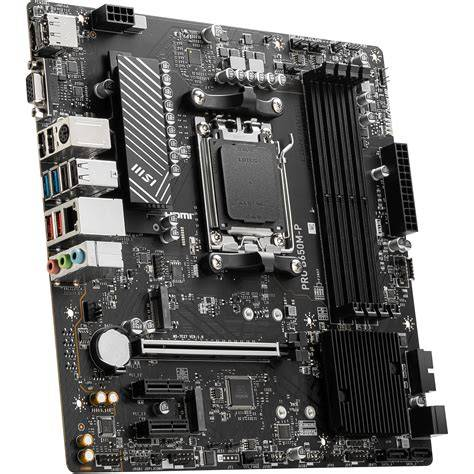
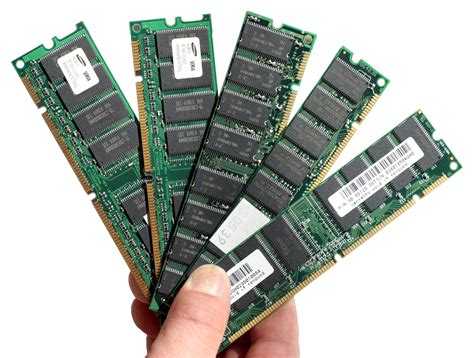
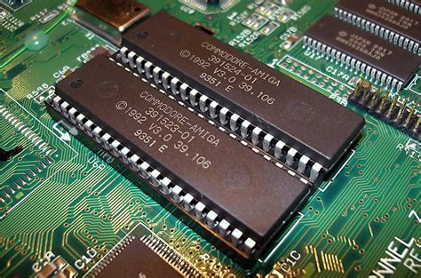
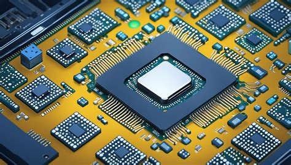

Eksplorasi Komponen Komputer & Laptop
Panduan Lengkap Spesifikasi, Variasi, Kerusakan, dan Solusi Perangkat Keras
1. Papan Induk
Motherboard
Deskripsi & Fungsi
Papan sirkuit utama yang bertindak sebagai tulang punggung sistem komputer. Berfungsi menghubungkan dan mendistribusikan daya serta jalur komunikasi ke seluruh komponen seperti CPU, RAM, Hardisk, dan kartu grafis.
Perkembangan Variasi (Kapasitas, Kualitas, Kecepatan)
Berkembang dari form factor ATX besar hingga ITX mini untuk laptop/PC ringkas. Jalur data (bus) meningkat pesat dari teknologi AGP tua hingga PCI Express 5.0/6.0 yang menawarkan bandwidth transfer ratusan GB/s, serta dukungan chipset terbaru untuk efisiensi daya maksimal.
Kerusakan yang Umum Terjadi
Kapasitor kembung/bocor karena tegangan tidak stabil, korosi akibat kelembapan, jalur sirkuit terputus, atau kerusakan pada IC Power/Chipset akibat panas berlebih.
Solusi
Lakukan penggantian kapasitor yang rusak melalui penyolderan ulang, bersihkan papan dengan cairan contact cleaner khusus, gunakan casing dengan airflow mumpuni, serta wajib menyambungkan PC ke UPS/Stabilizer.
2. Memori Akses Acak
Random Access Memory (RAM)
Deskripsi & Fungsi
Media penyimpanan data sementara berkecepatan tinggi yang digunakan CPU saat memproses aplikasi aktif. Berfungsi mempercepat proses multitasking sistem operasi dan aplikasi.
Perkembangan Variasi (Kapasitas, Kualitas, Kecepatan)
Mengalami transformasi dari generasi DDR1, DDR2, DDR3, DDR4 (2133-3200MHz), hingga DDR5 terbaru yang mampu menembus kecepatan di atas 4800MHz+ dengan kapasitas masif melebihi 128GB per keping tunggal untuk performa gaming dan server mutakhir.
Kerusakan yang Umum Terjadi
Komputer sering mengalami Blue Screen of Death (BSOD), gagal booting dengan bunyi bip berulang, atau kapasitas RAM terbaca tidak penuh (usable memori menyusut).
Solusi
Lepaskan RAM, bersihkan pin tembaga kuning menggunakan penghapus pensil secara perlahan, pindahkan ke slot RAM lain, atau ganti modul RAM jika tes diagnosa hardware (MemTest86) menunjukkan adanya eror permanen.
3. Prosesor
Processor / Central Processing Unit (CPU)
Deskripsi & Fungsi
Otak utama dari sebuah komputer yang bertanggung jawab mengeksekusi instruksi, menghitung algoritma data, dan mengontrol interaksi kerja seluruh komponen hardware.
Perkembangan Variasi (Kapasitas, Kualitas, Kecepatan)
Dari era single-core (Pentium) berevolusi menjadi arsitektur multi-core masif (seperti lini Intel Core i9 atau AMD Ryzen 9) dengan fabrikasi super kecil (hingga 3nm) yang memuat miliaran transistor. Kecepatan clock kini dapat melampaui 5.0 GHz disertai integrasi AI processing unit.
Kerusakan yang Umum Terjadi
Overheating (suhu ekstrem) yang memicu thermal throttling (PC mendadak lemot), sistem mati mendadak saat diberi beban kerja berat, atau pin konektor bengkok/patah (pada tipe PGA).
Solusi
Ganti thermal paste secara berkala (minimal 1 tahun sekali), bersihkan kipas pendingin (Heatsink/AIO Liquid Cooler) dari debu tebal, dan pastikan sistem pendinginan berjalan optimal untuk menjaga suhu di bawah batas aman.
4. Memori Simpan Permanen
Read-Only Memory / Storage (HDD & SSD)
Deskripsi & Fungsi
Media penyimpanan data internal jangka panjang yang bersifat non-volatile (data tidak hilang saat listrik mati). Berfungsi menyimpan file sistem operasi (OS), aplikasi, serta file pribadi pengguna.
Perkembangan Variasi (Kapasitas, Kualitas, Kecepatan)
Beralih dari teknologi mekanis Hard Disk Drive (HDD) piringan berkecepatan rendah (PATA/SATA), menuju Solid State Drive (SSD) SATA, hingga standar NVMe M.2 berbasis sirkuit flash berkecepatan tinggi yang mampu membaca data hingga di atas 7000 MB/s dengan kapasitas multi-terabyte.
Kerusakan yang Umum Terjadi
Mengalami Bad Sector (pada HDD), corrupt file secara acak, penurunan kesehatan flash (Health Percentage drop pada SSD), atau media penyimpanan tidak terdeteksi sama sekali di BIOS.
Solusi
Lakukan pengecekan kesehatan berkala dengan software CrystalDiskInfo, jalankan pemindaian chkdsk, ganti kabel data SATA/slot M.2, dan selalu lakukan backup data berkala ke cloud atau drive eksternal.
5. Baterai CMOS
Complementary Metal-Oxide-Semiconductor (CMOS) Battery
Deskripsi & Fungsi
Baterai kancing kecil (umumnya tipe CR2032) yang bertugas memberikan daya konstan pada chip memori BIOS dan Real-Time Clock (RTC) pada motherboard saat komputer tidak terhubung ke aliran listrik.
Perkembangan Variasi (Kapasitas, Kualitas, Kecepatan)
Dari segi variasi fisik cenderung konstan menggunakan format lithium cell standar, namun kualitas daya tahan baterai modern telah ditingkatkan agar mampu menjaga konfigurasi enkripsi firmware serta jam internal komputer aktif hingga 5-10 tahun tanpa penggantian.
Kerusakan yang Umum Terjadi
Waktu dan tanggal Windows selalu kembali ke tahun lampau setiap komputer dinyalakan, pengaturan BIOS Setup Utility ter-reset ke default secara otomatis, atau muncul eror 'CMOS Checksum Error' saat booting.
Solusi
Lepaskan baterai kancing yang lama dari dudukannya dengan menekan klip pengunci, lalu ganti dengan baterai CMOS CR2032 baru yang segar, kemudian atur ulang jam serta konfigurasi di menu BIOS.
6. Unit Catu Daya
Power Supply Unit (PSU)
Deskripsi & Fungsi
Komponen penyalur energi yang bertugas mengonversi arus listrik AC dari PLN menjadi arus DC bertegangan rendah yang stabil untuk dialirkan ke seluruh hardware sensitif di dalam komputer.
Perkembangan Variasi (Kapasitas, Kualitas, Kecepatan)
Hadir dalam ragam kapasitas watt (dari 400W hingga 1600W+). Kualitas efisiensi diklasifikasikan lewat sertifikasi resmi standar industri "80 Plus" (Bronze, Silver, Gold, Platinum, Titanium). Tersedia dalam variasi kabel Non-Modular, Semi-Modular, hingga Full-Modular yang rapi.
Kerusakan yang Umum Terjadi
Komputer mati total tanpa tanda kehidupan, sering restart mendadak saat bermain game berat, keluar bau hangus akibat komponen trafo/kapasitor dalam PSU terbakar, atau lonjakan arus merusak komponen lain.
Solusi
Jangan gunakan PSU bawaan casing yang murah (abal-abal). Segera ganti dengan PSU berkualitas bersertifikasi minimal 80+ Bronze, pasang sirkuit pelindung tegangan, dan jangan memaksa menjalankan PC jika PSU mengeluarkan suara mendengung aneh.
7. Chipset
Chipset
Deskripsi & Fungsi
Kumpulan sirkuit mikro terintegrasi pada motherboard yang berfungsi sebagai lalu lintas pengatur komunikasi data antara prosesor dengan komponen eksternal (seperti port USB, slot PCIe, kartu suara, kontroler penyimpanan, dan LAN).
Perkembangan Variasi (Kapasitas, Kualitas, Kecepatan)
Telah bermigrasi dari arsitektur lama dua chip terpisah (Northbridge untuk memori/grafis cepat dan Southbridge untuk I/O lambat) menjadi arsitektur chip tunggal modern berkecepatan tinggi (PCH/FCH) yang terintegrasi langsung atau berjalan mendampingi prosesor canggih masa kini.
Kerusakan yang Umum Terjadi
Overheat hebat pada chip akibat heatsink pendingin bawaan kendor, port USB atau SATA mati secara mendadak di seluruh papan, atau malfungsi total sistem sirkuit interkoneksi hardware.
Solusi
Pastikan aliran udara dalam casing berjalan baik, lakukan re-pasta jika chipset memiliki pendingin pasif bawaan, atau lakukan perbaikan profesional menggunakan metode reball/penggantian chip via teknisi handal BGA rework station.